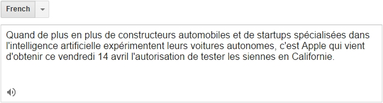
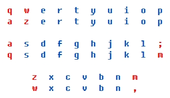

法语十日入门
第1课 | 第2课 | 第3课 | 第4课 | 第5课 | 第6课 | 第7课 | 第8课 | 第9课 | 第10课 | 法汉词典
|
1.1 前言 1.2 法语单词的发音 1.3 法语字母的发音 1.4 在电脑上输入法语 |
1.1 前言
《法语十日入门》是为有英语基础的中国读者编写的法语入门课程，共有十课，每天学习一课，十天之后，即可入门。编写《法语十日入门》的目的是让读者在尽可能短的时间里，对法语的框架有一个大概的了解，为今后使用正规教材系统学习法语奠定基础。
1.2 法语单词的发音
英语和法语均使用国际音标来标注单词的发音。例如：
cat [kæt] 猫（英语）
chat [ʃa] 猫（法语）
熟悉国际音标的读者可以毫不困难地拼读出法语单词。为了节省篇幅，我们不再介绍国际音标，只介绍法语单词中特有的字母组合及其发音，请看下表。
| 字母组合 | 国际音标 | 类似于汉语拼音 | 例词（朗读） | 注释 |
| ai | ɛ | ai | jamais [ʒamɛ] mauvais [movɛ] | ① |
| am/an/em/en | ã | ang | manger [mãʒe] penser [pãse] | |
| au/eau | o | ou | sauver [sove] bateau [bato] | |
| é/词尾er | e | ei | beauté [bote] rester [rɛste] | |
| eu | œ | 无 | docteur [dɔktœr] honneur [ɔnœr] | ② |
| ø | 无 | heureux [œrø] monsieur [məsjø] | ||
| gn | ɲ | 无 | campagne [kãpaɲ] montagne [mɔ̃taɲ] | ③ |
| im/in/ain/ein | ɛ̃ | an | matin [matɛ̃] demain [dəmɛ̃] | |
| oi | wa | wa | poisson [pwasɔ̃] voiture [vwatɥr] | ④ |
| oin | wɛ̃ | wan | besoin [bəzwɛ̃] témoin [temwɛ̃] | ⑤ |
| om/on | ɔ̃ | ong | tomber [tɔ̃be] maison [mɛzɔ̃] | |
| ou | u | u | nouveau [nuvo] trouver [truve] | |
| r/rr | r | 无 | tirer [tire] erreur [ɛrœr] | ⑥ |
| u | ɥ | yü | minute [minɥt] salut [salɥ] | |
| um/un | œ̃ | 无 | parfum [parfœ̃] chacun [ʃakœ̃] | ⑦ |
注释：
① 法语单词的重音总是位于最后一个音节上，例如jamais [ʒamɛ]中的[mɛ]和mauvais [movɛ]中的[vɛ]，因此法语单词的国际音标没有重音符号（'）。词尾辅音字母通常不发音，例如这两个例词中的s，但l/r例外，例如canal [kanal]和venir [vənir]。
② [œ]和[ø]是法语特有元音，与[ə]相似，在掌握之前，可以暂时发[ə]音。辅音字母h永远不发音，例如honneur和heureux中的h。
③ [ɲ]是法语特有辅音，与[njə]相似，在掌握之前，可以暂时发[njə]音。
④ 实际发音时，需要在[wa]前面加上一个很短的[u]音，例如poisson [puwasɔ̃]。
⑤ 实际发音时，需要在[wɛ̃]前面加上一个很短的[u]音，例如besoin [bəzuwɛ̃]。
⑥ [r]是小舌颤音，在掌握之前，可以暂时发[h]音。
⑦ [œ̃]是法语特有元音，与[ɛ̃]相似，在掌握之前，可以暂时发[ɛ̃]音。
另外补充两点：
① [p/b]、[t/d]、[k/g]这三对清、浊辅音，当它们与元音拼读在一起时，在英语中有明显区别，例如pig和big，但在法语中，[p]实际上发[b]音、[t]实际上发[d]音、[k]实际上发[g]音，也就是三个清辅音“浊化”为三个浊辅音。以单词petit为例，虽然它的国际音标是[pəti]（两个清辅音），但实际发音是[bədi]（两个浊辅音）。以前学过英语的读者一定要尽快适应这种“浊化”现象。
只有后面不是元音或者没有元音时，这三个清辅音才发它们原来的音，例如trouver [truve]（不要读成[druve]），vite [vit]（不要读成[vid]）。
② 访问谷歌翻译网站（translate.google.com）或者微软翻译网站（www.bing.com/translator），从左边的列表框中选择法语，在左边的文本框中输入（或粘贴）一个法语句子，点击文本框下方的喇叭图标，即可听到这个法语句子的女声朗读发音。

1.3 法语字母的发音
看到法语缩略词时，例如OVNI（不明飞行物），不能用英语字母的发音拼读，而应当用法语字母的发音拼读。下面是法语26个字母的发音。
| Aa [a] | Nn [ɛn] |
| Bb [be] | Oo [o] |
| Cc [se] | Pp [pe] |
| Dd [de] | Qq [kɥ] |
| Ee [ə] | Rr [ɛr] |
| Ff [ɛf] | Ss [ɛs] |
| Gg [ʒe] | Tt [te] |
| Hh [aʃ] | Uu [ɥ] |
| Ii [i] | Vv [ve] |
| Jj [ʒi] | Ww [dubləve] |
| Kk [ka] | Xx [iks] |
| Ll [ɛl] | Yy [igrɛk] |
| Mm [ɛm] | Zz [zɛd] |
1.4 在电脑上输入法语
在电脑上输入法语之前，需要安装法语键盘，方法是依次点击（以Windows 10简体中文专业版为例）：控制面板 -- 语言 -- 添加语言 -- 法语 -- 打开 -- 法语（法国）-- 添加。
打开记事本，点击桌面右下角的M小图标（左侧是“中”字或“英”字），出现一个菜单，点击法语（法国），启动法语键盘，开始输入法语。下图1/3/5行是英语键盘，2/4/6行是法语键盘，读者可以看出，有五个字母（qwazm）的位置是不同的。

带重音符号的法语字母的输入方法是（加号＋表示先按前面的键，再按后面的键）：
| 字母 | 按键 |
| à | 0 |
| â | [ ＋ q |
| æ | Alt ＋ 0230（0230在小键盘上输入） |
| ç | 9 |
| è | 7 |
| é | 2 |
| ê | [ ＋ e |
| ë | Shift ＋ [ ＋ e |
| î | [ ＋ i |
| ï | Shift ＋ [ ＋ i |
| ô | [ ＋ o |
| œ | Alt ＋ 0156（0156在小键盘上输入） |
| ù | ' |
| û | [ ＋ u |